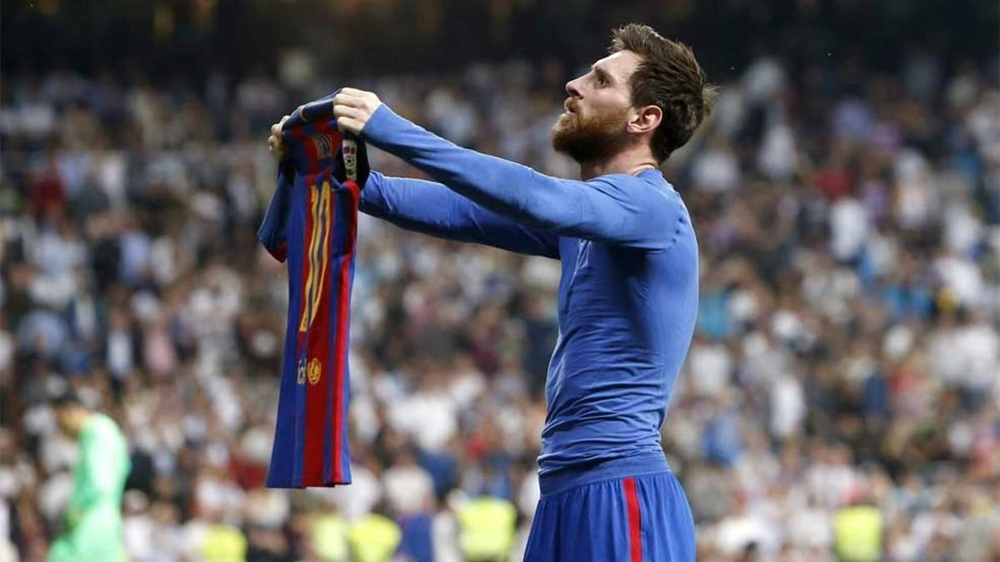
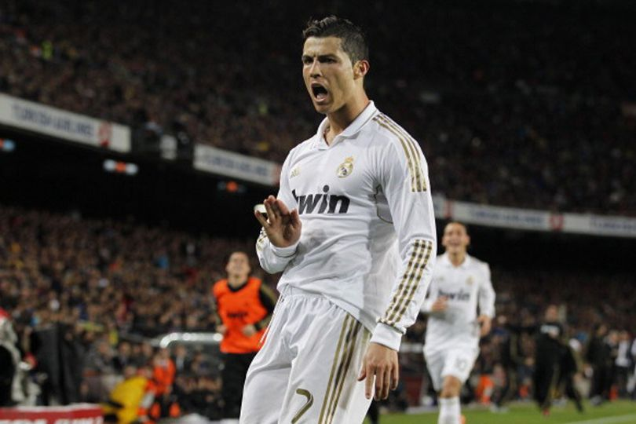

Lionel Messi
Considerat el millor jugador de la història del FC Barcelona i una llegenda absoluta de LaLiga. Amb 10 títols de lliga, 4 Champions i 7 Pilotes d'Or, Messi ha marcat més de 670 gols amb el Barça. La seva influència en el joc és inigualable.
Cristiano Ronaldo
L'estrella portuguesa és el màxim golejador històric del Real Madrid. Amb 4 Champions i 2 Lligues amb el club, va revolucionar LaLiga amb la seva potència i esperit competitiu. 5 Pilotes d'Or avalen la seva llegenda.
